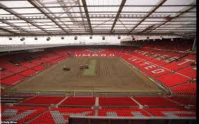
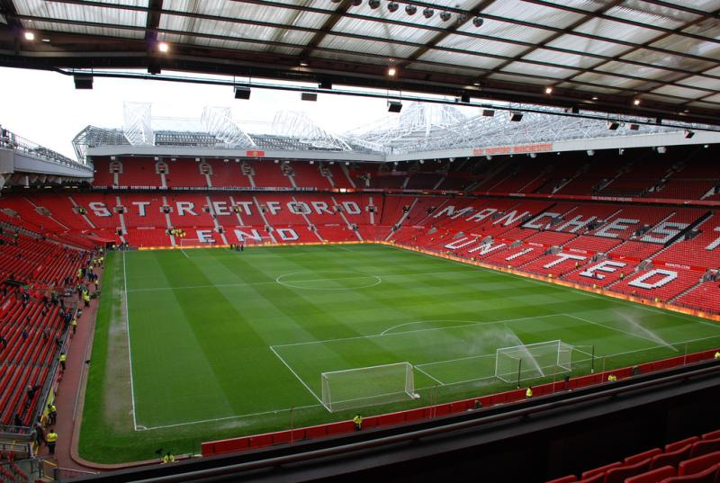

Историја стадиона
Њутон Хит је у почетку играо на пољу на Норт Роуду, близу железничког дворишта; првобитни капацитет је био око 12.000, али званичници клубова су сматрали да су објекти неадекватни за клуб који се надао да ће се придружити Фудбалској лиги. Неке експанзије су се одвијале 1887. године, а 1891. године Њутон Хит је користио своје минималне финансијске резерве за куповину две трибина, од којих је свака могла да има 1.000 гледалаца. Иако присуствовања нису забележена за многе од најранијих утакмица на Норт Роуду, највеће документовано присуство било је око 15.000 за утакмицу прве лиге против Сандерленда 4. марта 1893. Слично присуство забележено је и за пријатељски меч против Гортон Вила 5. септембра 1889. године.
Међутим, након што је Манчестер Јунајтед први пут освојио лигу 1908. и ФА куп годину дана касније, одлучено је да је Банк Стрит превише рестриктиван за Дејвисову амбицију, у фебруару 1909, шест недеља пре наслова првог ФА клуба, Олд Трафорд је проглашен за дом Манчестер Јунајтеда, након куповине земљишта за око 60.000 фунти. Архитекта Арчибалд Лајц добио је буџет од 30.000 фунти за изградњу; оригинални планови захтевали су капацитет за седење од 100.000, мада су ограничења буџета довела до ревизије на 77.000. Стадион су градили господа Брамелд и Смит из Манчестера. Регистровање стадиона је обављено 25. марта 1939. године, када је полуфинале ФА Купа између Вулверхемптон Вондерерса и Гримсбиа Ситија привукло 76.962 гледалаца.

1995. године, Севернa трибина је преуређена у три нивоа, враћајући капацитет на око 55.000. На крају сезоне 1998-1999, на Истоку и Западу стајали су други нивои, повећавајући капацитет на око 67.000, а између јула 2005. и маја 2006. године, на другом нивоу на северозападу и северу додато је 8.000 мјеста. Део нове седеће трибине се први пут користио 26. марта 2006. године, када је по 69.070 постао нови рекорд Премиер лиге. Тај рекорд је био постепено повећаван, пре него што је достигао врхунац 31. марта 2007. године, када је 76.098 гледалаца видело Манчестер Јунајтед у победи над Блекбурн Роверсима са 4-1, са само 114 места која су била празна (0.15 одсто укупног капацитета 76.212). У 2009. години, реорганизација седишта довела је до смањења капацитета за 255 на 75.957. Манчестер Јунајтед има друг највећи стаион од европских фудбалских клубова само иза Борусије из Дортмунда.
